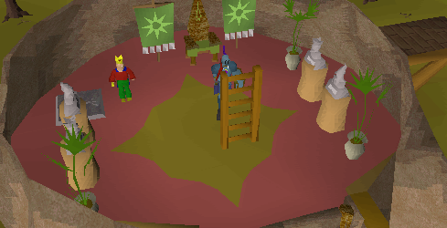
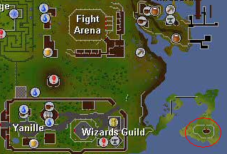
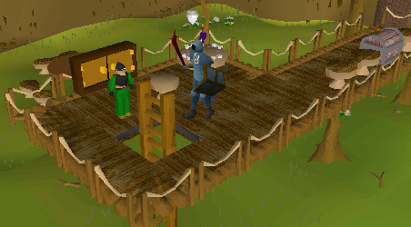
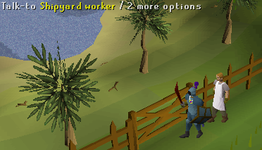
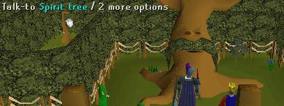
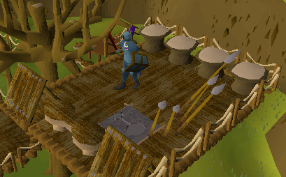
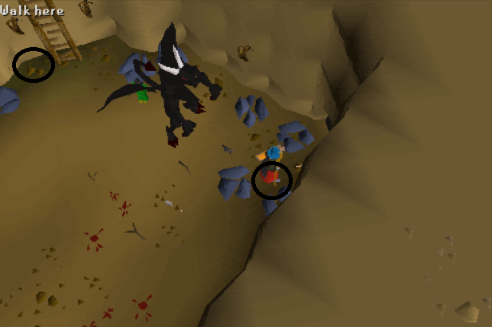
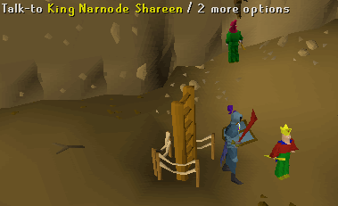
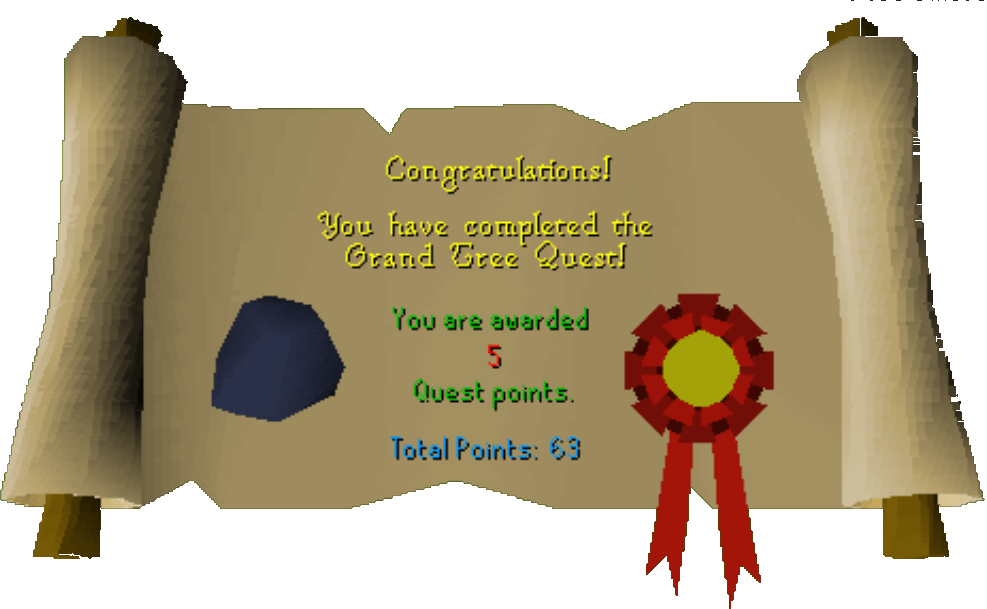

The Grand Tree
Description: The Grand Tree, which shelters the majority of RuneScape's small gnome population, is dying. Is it human sabotage or an inside job? Help King Shareem to find the true cause and save the tree gnomes from an uncertain fate.Difficulty: Experienced
Length: Long
Items & Skills Needed:
- 25 agility
- The ability to beat level 172 demon (can be safespotted)
Recommended:
- Access to the Spirit Tree system (requires completion of Tree Gnome Village)
Reward: 5 Quest points, 11,200 Agility XP, 18,400 Attack XP, 2,150 Magic XP, the ability to use spirit tree teleport from gnome stronghold, the ability to use the gnome gliders
Instructions:
Note: Before starting the quest, make sure to help Femi at the Tree Gnome Stronghold gate with her boxes. Otherwise, you'll need to pay 1,000 coins or use the Spirit Tree to get inside.Talk to the King at the Grand Tree, which is in the northern area of the Gnome Stronghold; he will give you a translation book and a bark sample.

Take these to Hazelmere; he is south of Ardougne and east of Yanille, on a spit of land near the town with the Fight Arena and Magic Guild.

There are Jungle Spiders on this peninsula. The house is on top of a hill. Enter and go up the ladder.
Then talk to Hazelmere; he will take the sample and show you a message.
The message when translated using your book says:
"A man came to me with the King seal
I gave human Daconia rock
and Daconia rocks will kill trees"
* I have given a direct translation. *
Go back to the King at Grand Tree, talk to him, and select the message as above (you will have to select 'none of the above' 2 times before the correct selection appears).
Leave the Grand Tree and head directly south until you see a ladder to the east. Climb the ladder, talk to Glough, and he says he will take care of it. Then return to the King.

The King tells you that they have already caught someone; you ask to see the prisoner. The King gives you permission and tells you that the prisoner is at the top of the tree.
Charlie, the prisoner, tells you to search Glough's home.
Go back to Glough, search the cupboard; you will find a journal. (There is also a chest; you will get the key to this a little later in the quest).
Take the journal back to the King, and tell him of your suspicions. The King dismisses your ideas and sends you back to talk to Glough.
Talk to Glough once again... you accuse him, and he has you arrested and imprisoned next to Charlie at the top of the tree.
Whilst in prison Charlie tells you about warships being built on Karamja. He tells you a password to tell to the foreman of the shipyard.
The King lets you out of prison. You can now use the glider to travel to Karamja to find the foreman (note: level 42 Jungle Spiders and level 48 Jogres roam this area).
Try to open the gate; the shipyard worker will ask for a password. Select the three choices:
ka
lu
min

Talk to the foreman; he will ask 3 questions to make sure you've come from Glough.
1. How is Glough's wife? (She is no longer with us)
2. What's Glough's favourite food? (Wormhole)
3. What is his new girlfriend called? (Anita)
(If you get the answers wrong he will attack you and you will have to start again with a new foreman!)
After this, you will receive a note for Glough about the ship. Take this back to the King.
You can't return by the glider, as it was broken when you landed. If you try to walk back the guards won't let you back in as they think you are a spy. To re-enter, either pay Femi 1,000 coins at the Stronghold gate (or enter for free if you've already helped her), or use the Spirit Tree system if you have access to it.

The King yet again refuses to believe your accusations against Glough. Go and talk to Charlie at the top of the tree again.
Charlie suggests that you talk to Glough's girlfriend, Anita, as she might be able to help you. Travel northwest from the Grand Tree until you find a swamp. Anita's house is located to the west of the swamp — climb the ladder there to reach it.
Talk to Anita and she will ask you to return a key to Glough. This is the key to the chest you've been waiting to open!
Open the chest in Glough's house to find some notes about his plan to take over RuneScape.
Take this evidence to the King. Once again, he doesn't believe you but he says that they have searched Glough's house and all they found was four sticks. The King gives you the sticks. They spell "T-U-Z-O."
If you check with your translation book you will find that, if rearranged, the sticks will spell the word 'open'.
For the whole list of translations go to the bottom of this guide
Now is a good time to stop by a bank and prepare for the upcoming fight with a level 172 Black Demon. If you're using melee, bring plenty of food and prayer potions, and use Protect from Melee during the fight. If you're using magic or ranged, you can safely attack the demon from a distance using safe spots.
Go to Glough's house and go up to the watchtower (this is why you need level 25 agility to complete quest).
Place the sticks on the stand in the following order (use the sticks with the stand):
'T' in the far left position
'U' in center left position
'Z' in center right
'O' in the far right
'T' in the far left position
'U' in center left position
'Z' in center right
'O' in the far right

Once you have done this, open the stone stand, and climb down. After you drop down, a Black Demon (level 172) attacks you.
Range Option:
There are mithril rocks west of the ladder. Make sure you lure the demon out first, then run over to the rocks. If the demon can still attack you, go farther in.

You have a brief conversation with Glough, and then a Black Demon appears and attacks you (The map will zoom out and start to shake). Once you have killed it, follow the passageway until you see the King. Talk to him and he will express concern that you are hurt. At this point you once again accuse Glough.

He sends guards to check out your story. Once proven, he asks you to help one last time and find the final Daconia Stone. Search all the roots in the area until you find a small blue rock.
Once you find it return to King and he will reward you. You will also be able to use the glider, and there is now a mine open beneath the tree, accessible by pushing some roots. To access this mine in the future, enter the Grand Tree and move the tile in the floor.
Congratulations, Quest Complete!

The Gnome Translation Guide
-A-Arpos: Rocks
Ando: Gate
Andra: City
Ataris: Cow
-C-
Cef: Threat
Cheray: Lazy
Cinqo: King
Cretor: Bucket
-E-
Eis: Me
Es: A
Et: And
Eto: Will
-G-
Gandius: Jungle
Gal: All
Gentis: Leaf
Gutus: Banana
Gomondo: Branch
-H-
Har: Old
Harij: Harpoon
Hewo: Grass
-I-
Ip: You
Imindus: Quest
Irno: Translate
-K-
Kar: No
Kai: Boat
Ko: Sail
-L-
Lauf: Eye
Laquinay: Common Sense
Lemanto: Man
Lemantolly: Stupid Man
Lovos: Gave
-M-
Meso: Came
Meriz: Kill
Mina: Time(s)
Mos: Coin
Mi: I
Mond: Seal
-P-
Por: Long
Prit: With
Priw: Tree
Pro: To
-Q-
Qui: Guard
Quir: Guardian
-R-
Rentos: Agility
-S-
Sarko: Begone
Sind: Big
-T-
Ta: The
Tuzo: Open
-U-
Undri: Lands
This quest guide was written by pj. Thanks to Swaty, Koppen, Your Homey 1, Pirate Bob49, and faital03 for corrections.
This quest guide was entered into the database on Sat, May 08, 2004, at 02:19:43 PM by Freakybat, CJH, Headshot and was last updated on Thu, Aug 19, 2004, at 03:28:30 AM.